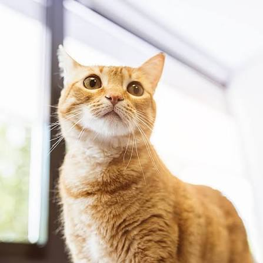

Luna
Edad: 1 año
Es una perrita cariñosa y juguetona. Busca una familia responsable.
Encuentra a tu nuevo mejor amigo.
Cada uno merece una familia que lo cuide, lo respete y le dé mucho amor.
Edad: 1 año
Es una perrita cariñosa y juguetona. Busca una familia responsable.

Edad: 2 años
Es amigable, activo y le encanta salir a pasear.

Edad: 6 meses
Es un gatito curioso y tierno que busca un hogar seguro.
Acércate a nuestro equipo para recibir información sobre el proceso de adopción y los cuidados necesarios. Recuerda que adoptar es una responsabilidad para toda la vida.